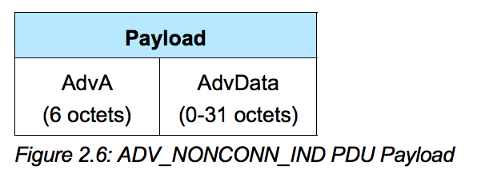

Advertising Data
Advertising Data フォーマット
| Type | フォーマット |
|---|---|
| ADV_NONCONN_IND |  |
iBeaconは、ADV_NONCONN_INDでアドバータイズされるが、ADV_NONCONN_INDでは、AdvAが6オクテット、AdvDataが0-31オクテットで構成される。
AdvA
AdvAは、6オクテット(48bit)のアドレスにより構成される。デバイスを識別するためのアドレスになる。
AdvAのアドレスは、PUD HeaderのTxAdd, RxAddの記述により、publicとrandomのアドレスが割り振られる。
| 仕様 | AdvAの挙動 |
|---|---|
| Public address | IEEE Registration Authorityにより登録されたアドレス。48 bitのアドレスは、24bitがCompany ID (CID)で、24bitがMac Addressで構成。デバイスが存在する間は同じ値。 |
| Random Static address | 電源がOnになった際に割り振られるランダムな値。Rebootがかかると違う値に。 |
| Private Non-Resolvable address | identity resolving key (IRK)と乱数により生成。接続中も値を変えることができる。 |
| Private Non-Resolvable address | Randomな値を任意のタイミングで割り振る。あまり一般的ではない。 |
SoftDeviceでは、これらの設定値は、GAP Address Typeで定義されている。
1 2 3 4 | #define BLE_GAP_ADDR_TYPE_PUBLIC 0x00 #define BLE_GAP_ADDR_TYPE_RANDOM_STATIC 0x01 #define BLE_GAP_ADDR_TYPE_RANDOM_PRIVATE_RESOLVABLE 0x02 #define BLE_GAP_ADDR_TYPE_RANDOM_PRIVATE_NON_RESOLVABLE 0x03 |
SoftDeviceでは、sd_ble_gap_address_setで、反映することができるが、今回のiBeaconのサンプルでは使用しない。
AdvData
AdvertisingのDataフォーマットは、Core Bluetooth 4.0 Core Specificationにより定義されている。

Advertisingのデータのフォーマットでは、AD Structureという構造により構成される。AD Structureは、長さ+AD Type + AD Dataの3要素により定義される。AD Typeで定義可能な値は、以下の通りである。
| 値 | AD Type | 情報|
| -- | -- |
| 0x01 | FLAGS | |
| 0x02 |SERVICE | More 16-bit UUIDs available |
| 0x03 | SERVICE | Complete list of 16-bit UUIDs available |
| 0x04 | SERVICE | More 32-bit UUIDs available |
| 0x05 | SERVICE | Complete list of 32-bit UUIDs available |
| 0x06 | SERVICE | More 128-bit UUIDs available |
| 0x07| SERVICE | Complete list of 128-bit UUIDs available |
| 0x08 | LOCAL NAME | Shortened local name |
| 0x09 | LOCAL NAME | Complete local name |
| 0x0A | TX POWER LEVEL | 0xXX:-127 to +127dBm |
| 0x0D | SIMPLE PAIRING OPTIONAL OOB TAGS | Class of device |
| 0x0E | SIMPLE PAIRING OPTIONAL OOB TAGS | Simple Pairing Hash C |
| 0x0F | SIMPLE PAIRING OPTIONAL OOB TAGS | Simple Pairing Randomizer R |
| 0x10 | SECURITY MANAGER TK VALUE | SECURITY MANAGER TK VALUE |
| 0x11 | SECURITY MANAGER OOB FLAGS | SECURITY MANAGER OOB FLAGS |
| 0x12 | SLAVE CONNECTION INTERVAL RANGE | SLAVE CONNECTION INTERVAL RANGE |
| 0x14 | SERVICE SOLICITATION | List of 16 bit Service UUIDs|
| 0x15 | SERVICE SOLICITATION | List of 128 bit Service UUIDs|
| 0x16 | SERVICE DATA | The first 2 octets contain the 16 bit Service UUID followed by additional service data|
| 0xFF | Manufacture Specific | The first 2 octets contain the Company Identifier Code followed by additional manufacturer specific data |
BLUETOOTH SPECIFICATION Version 4.0 [Vol 3] P401-P403から抜粋
iBeaconのAdvertisingのパケットは、下記のような値と構造になっている。

iBeaconのFLAGS

Proximity Beacon Specification Release R1 P6より抜粋
iBeaconでは
1 | 02 01 06 |
から始まる。
1 | 02 01 06 |
は、Flagsを定義している。SoftDeviceは、 S110 GAP Advertisement Flags の値がそれに対応する。
S110 GAP Advertisement Flags では、下記の値が定義されている。
| 定数 | 意味 |
|---|---|
| BLE_GAP_ADV_FLAG_BR_EDR_NOT_SUPPORTED | BR/EDR not supported. |
| BLE_GAP_ADV_FLAG_LE_BR_EDR_CONTROLLER | Simultaneous LE and BR/EDR, Controller. |
| BLE_GAP_ADV_FLAG_LE_BR_EDR_HOST | Simultaneous LE and BR/EDR, Host. |
| BLE_GAP_ADV_FLAG_LE_GENERAL_DISC_MODE | LE General Discoverable Mode. |
| BLE_GAP_ADV_FLAG_LE_LIMITED_DISC_MODE | LE Limited Discoverable Mode. |
| BLE_GAP_ADV_FLAGS_LE_ONLY_GENERAL_DISC_MODE | LE General Discoverable Mode, BR/EDR not supported. |
| BLE_GAP_ADV_FLAGS_LE_ONLY_LIMITED_DISC_MODE | LE Limited Discoverable Mode, BR/EDR not supported. |
1 | 02 01 06 |
は
| 値 | 意味 | 概要 | | -- | -- | | 02 | length | 命令の長さ | | 01 | AD Type | 命令のタイプ | | 06 | flags | flagsの値|
という構造になっており、最後の0x06がflagsにあたる。0x06は、BLE_GAP_ADV_FLAG_LE_GENERAL_DISC_MODEと BLE_GAP_ADV_FLAG_BR_EDR_NOT_SUPPORTEDの論理和にあたる。
1 | BLE_GAP_ADV_FLAGS_LE_ONLY_LIMITED_DISC_MODE (BLE_GAP_ADV_FLAG_LE_LIMITED_DISC_MODE | BLE_GAP_ADV_FLAG_BR_EDR_NOT_SUPPORTED) |
で定義されているように、BLE_GAP_ADV_FLAGS_LE_ONLY_LIMITED_DISC_MODEをflagsでは使う。
プログラム内では、下記の通り定義する。
1 | uint8_t flags = BLE_GAP_ADV_FLAGS_LE_ONLY_GENERAL_DISC_MODE; |
iBeaconのManufacture Specific
Bluetooth 4.0 Core Specificationの定義では、

iBeaconのManufacture Specificは
1 | 1A FF 4c 00 02 15 00 nn..nn nnnn nnnn nn |
で定義されている。
FFは、AD Typeでは、Manufacture Specificを意味している。Manufacture Specificでは、続く2バイトで、Company識別子を入れるルールになっている。
AppleのCompany識別子では、0x004Cなので、ここに0x004Cが入っている。
企業識別子の一覧
https://www.bluetooth.org/ja-jp/specification/assigned-numbers/company-identifiers
企業識別子、各 Bluetooth SIG メンバー企業が一つ申請する一意の数字識別子になっており、申請するとBluetooth SIG によって割り当てられる。
そのあとは、Apple独自のフォマーットになっているので、それに従う。
1 2 3 4 5 6 7 8 9 10 11 12 13 14 15 16 17 18 19 20 21 22 23 24 | #define APP_BEACON_INFO_LENGTH 0x17 /**< Total length of information advertised by the Beacon. */ #define APP_ADV_DATA_LENGTH 0x15 /**< Length of manufacturer specific data in the advertisement. */ #define APP_DEVICE_TYPE 0x02 /**< 0x02 refers to Beacon. */ #define APP_MEASURED_RSSI 0xC3 /**< The Beacon's measured RSSI at 1 meter distance in dBm. */ #define APP_COMPANY_IDENTIFIER 0x002C /**< Company identifier for Nordic Semiconductor ASA. as per www.bluetooth.org. */ #define APP_MAJOR_VALUE 0x01, 0x02 /**< Major value used to identify Beacons. */ #define APP_MINOR_VALUE 0x03, 0x04 /**< Minor value used to identify Beacons. */ #define APP_BEACON_UUID 0x01, 0x12, 0x23, 0x34, \ 0x45, 0xaa, 0x67, 0x78, \ 0x89, 0xba, 0x13, 0xbc, \ 0x33, 0x1a, 0x22, 0xf0 /**< Proprietary UUID for Beacon. */ static uint8_t m_beacon_info[APP_BEACON_INFO_LENGTH] = /**< Information advertised by the Beacon. */ { APP_DEVICE_TYPE, // Manufacturer specific information. Specifies the device type in this // implementation. APP_ADV_DATA_LENGTH, // Manufacturer specific information. Specifies the length of the // manufacturer specific data in this implementation. APP_BEACON_UUID, // 128 bit UUID value. APP_MAJOR_VALUE, // Major arbitrary value that can be used to distinguish between Beacons. APP_MINOR_VALUE, // Minor arbitrary value that can be used to distinguish between Beacons. APP_MEASURED_RSSI // Manufacturer specific information. The Beacon's measured TX power in // this implementation. }; |
1 2 3 4 5 6 7 8 9 10 11 12 13 14 15 16 | uint32_t err_code; ble_advdata_t advdata; uint8_t flags = BLE_GAP_ADV_FLAGS_LE_ONLY_GENERAL_DISC_MODE; ble_advdata_manuf_data_t manuf_specific_data; manuf_specific_data.company_identifier = APP_COMPANY_IDENTIFIER; manuf_specific_data.data.p_data = (uint8_t *) m_beacon_info; manuf_specific_data.data.size = APP_BEACON_INFO_LENGTH; memset(&advdata, 0, sizeof(advdata)); advdata.flags = flags; advdata.p_manuf_specific_data = &manuf_specific_data; err_code = ble_advdata_set(&advdata, NULL); APP_ERROR_CHECK(err_code); |
Name
Advertising Data Encoder でname_typeが定義されているので、それも設定する。
1 2 3 4 5 | enum ble_advdata_name_type_t { BLE_ADVDATA_NO_NAME, BLE_ADVDATA_SHORT_NAME, BLE_ADVDATA_FULL_NAME } |
| 定数 | 意味 |
|---|---|
| BLE_ADVDATA_NO_NAME | デバイス名を定義しない。AD Structure自体が追加されない |
| BLE_ADVDATA_SHORT_NAME | AD Type 0x08のAD Structureが追加される |
| BLE_ADVDATA_FULL_NAME | AD Type 0x09のAD Structureが追加される |
1 2 3 4 5 6 7 8 9 10 11 12 13 14 15 16 17 | uint32_t err_code; ble_advdata_t advdata; uint8_t flags = BLE_GAP_ADV_FLAGS_LE_ONLY_GENERAL_DISC_MODE; ble_advdata_manuf_data_t manuf_specific_data; manuf_specific_data.company_identifier = APP_COMPANY_IDENTIFIER; manuf_specific_data.data.p_data = (uint8_t *) m_beacon_info; manuf_specific_data.data.size = APP_BEACON_INFO_LENGTH; memset(&advdata, 0, sizeof(advdata)); advdata.name_type = BLE_ADVDATA_NO_NAME; advdata.flags = flags; advdata.p_manuf_specific_data = &manuf_specific_data; err_code = ble_advdata_set(&advdata, NULL); APP_ERROR_CHECK(err_code); |